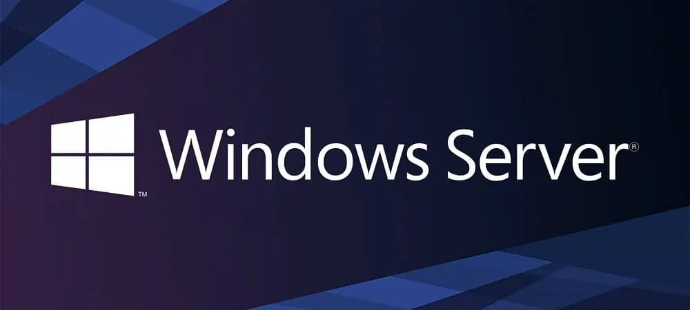
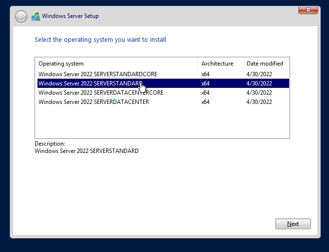
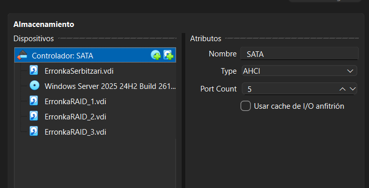
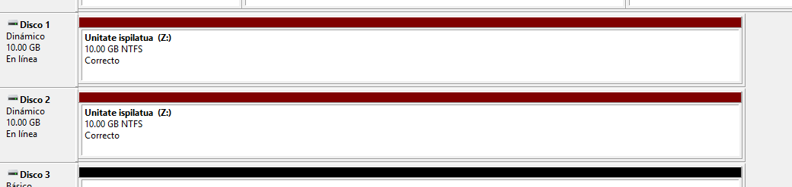
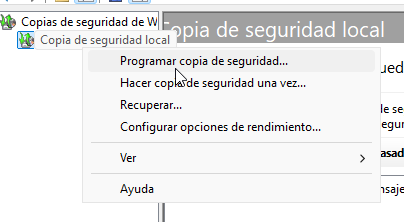
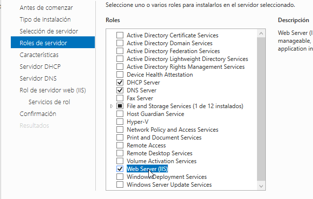
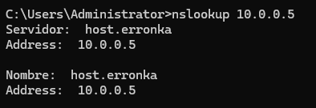
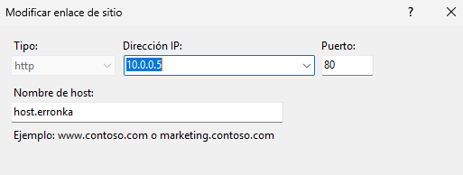

Sistema eragileak ezartzea

Aurkibidea
1. Lehen atala
Zer da sistema informatiko bat?
Informazioa jaso, gorde, prozesatu eta komunikatzeko elkarrekin lan egiten duten elementuen multzoa da. Hiru atal ditu:
- Hardwarea: osagai fisikoak (prozesadorea, memoria, diskoa, periferikoak).
- Softwarea: programak eta aplikazioak (sistema eragilea, utilitateak).
- Pertsonak: sistema erabili, garatu eta mantentzen dutenak.
Zer da sistema eragilea?
Hardwarearen, erabiltzaileen eta aplikazioen arteko bitartekaria den softwarea da. Funtzio nagusiak:
- Prozesuen kudeaketa.
- Memoriaren kudeaketa.
- Fitxategi-sistemaren kudeaketa.
- Sarrera/irteeren kudeaketa.
- Segurtasuna eta babesa.
- Erabiltzaile-interfazea (CLI edo GUI).
- Sareen eta baliabideen kudeaketa.
Arkitektura orokorra: nukleoa (kernel), sistema-deiak (API), shell edo interfazea, eta aplikazioak eta erabiltzailea.
Sistema eragile ezberdinak
| Windows | macOS | Linux | Android | iOS | |
|---|---|---|---|---|---|
| Lizentzia | Jabedunekoa, ordainpekoa | Jabedunekoa, Apple ekipoekin dator | Software librea (GPL) | AOSP irekia, Google zerbitzuak lizentziapean | Itxia, Apple gailuetan soilik |
| Ezaugarriak | Bateragarritasun handia, GUI intuitiboa | UNIX oinarria, ekosistema integratua | Egonkorra, segurua, pertsonalizagarria | Ukitzeko interfazea, aplikazio-denda zabala | Segurua, errendimendu optimizatua |
| Erabilera | Etxea, bulegoa, enpresak | Diseinua, multimedia, garapena | Zerbitzariak, hodeia, IoT | Mugikorrak, tabletak, telebistak | iPhone, iPad |
2. Sistemaren instalazioa
Makina birtualean lan egingo dugunez, VirtualBox erabili dugu, Windows Server 2025 Standard instalatzeko. Prozesua: makina berri bat sortu, izena, ISO-a eta bertsioa aukeratu, RAM-a, CPU-a eta biltegiratzea ezarri, eta abiarazi.
Instalazioan bertsioa aukeratu behar da:
- Core: interfaze grafikorik gabe, terminal huts bat.
- Standard: lizentzia ordaindu eta kito.
- Datacenter: garestiagoa, nukleo bakoitzeko ordaintzen da eta ez du mugarik birtualizazioan.

Gero lizentzia eta baldintzak onartu, "instalatu" aukera hautatu (ez dagoelako lehendik sistemarik), diskoa aukeratu eta instalazioa amaitu arte itxaron.
3. Oinarrizko konfigurazioak
IP
IP finko bat ezarri dugu: Configuración → Red e internet → Ethernet → Asignación IP → Manual. Gateway-aren IP-a jakiteko, cmd-n ipconfig erabil daiteke.
Erabiltzaileak eta taldeak sortzea
Win+X → Administración de equipos → Usuarios y grupos locales. Bertan erabiltzaile bakoitza (Usuarios) eta talde bakoitza (Grupos) sortu dugu, taldeen bidez baimen ezberdinak emateko.
Erabiltzaileak eta taldeak administratzea
- Pasahitz-arauak: Directiva de seguridad local → Directivas de cuenta → Directivas de contraseñas. Konplexutasuna eta gutxieneko luzera aldatu ditugu.
- Kontuaren blokeoa: pasahitz-hutsegite kopuru maximoa ezarri dugu, kontua blokeatzeko.
- Baimenak:
inetpubkarpetaren Propiedades → Seguridad → Editar atalean, ikasleari aldaketak egiteko baimena kendu diogu.
Kuotak ezartzea
Diskoaren Propiedades → Cuota… atalean, kuota-administrazioa gaitu eta erabiltzaile bakoitzaren mugak ezarri ditugu.
RAID
- RAID-1 (ispilatua): bi disko datu berberekin; batek huts egiten badu, besteak berreskuratzen ditu datuak.
- RAID-5: disko bat galduz gero, beste biren datuekin berreskura daiteke, daturik galdu gabe.
VirtualBox-en gutxienez 3 disko birtual sortu eta makinari gehitu behar zaizkio (Almacenamiento → Añadir disco). Gogoratu: kontrolagailu birtualean SATA gehiago jarri behar dira.

Gero, Win+X → Administración de discos atalean, Nuevo volumen aukeratu, diskoak, letra eta formatua ezarri. RAID-5-erako prozesua berdina da, funtzioa soilik aldatzen da.

Babeskopia
Administrar → Agregar roles y características → Características atalean Windows Server Backup instalatu dugu. Gero Copia de seguridad local → Programar copia de seguridad atalean ordutegia eta helmuga ezarri ditugu. Gomendagarriena sistematik aparteko disko bat erabiltzea da, sistemaren diskoaren tamaina bera edo handiagoa duena.

4. Zerbitzuak
Instalazioak
Administrar → Agregar roles y características atalean beharrezko rolak aukeratu ditugu: DHCP, DNS eta IIS.

DNS
Izen bat IP batekin lotzen du, eta alderantziz. Urratsak:
- Herramientas → DNS ireki eta zerbitzaria aukeratu.
- Bilaketa-zona zuzena eta alderantzizkoa sortu (alderantzizkorako, sarearen IDa behar da).
- Errorerik agertzen bada, konfigurazioa eskuz jarraitu: Host nuevo sortu eta zerbitzariaren IP-ra lotu.
- Servidores de nombres atalean zerbitzariaren IP-a jarri (Resolver), bi zonetan.
- Egiaztatu
cmd-nnslookupbidez.

IIS
Web bidezko sarbidea eskaintzen du. Konfigurazioa:
- IIS kudeatzailea ireki eta Sitios atalean zerbitzaria aukeratu.
- Default Web Site → Explorar bidez
wwwrootkarpetara joan; lehenetsitako orria ezabatu eta gurea itsatsi. - Enlaces atalean zerbitzariaren IP-a gehitu, eta Host atalean DNS zerbitzuko host-aren helbidea jarri.

Egiaztapena: zerbitzariaren IP-arekin eta DNS helbidearekin, bai zerbitzaritik bai beste gailu batetik.